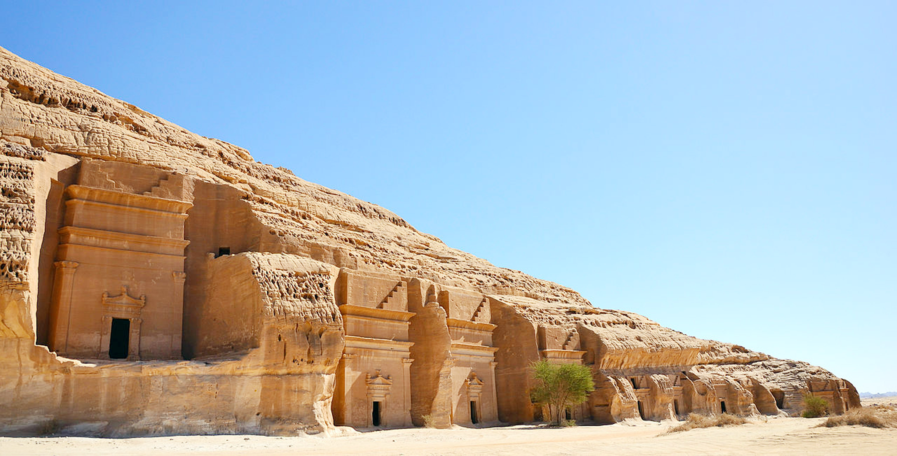
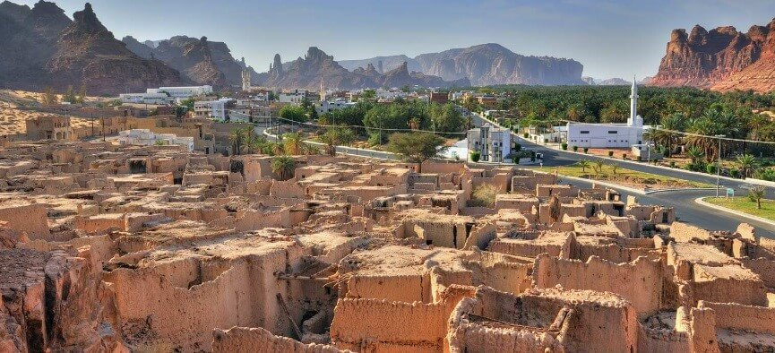
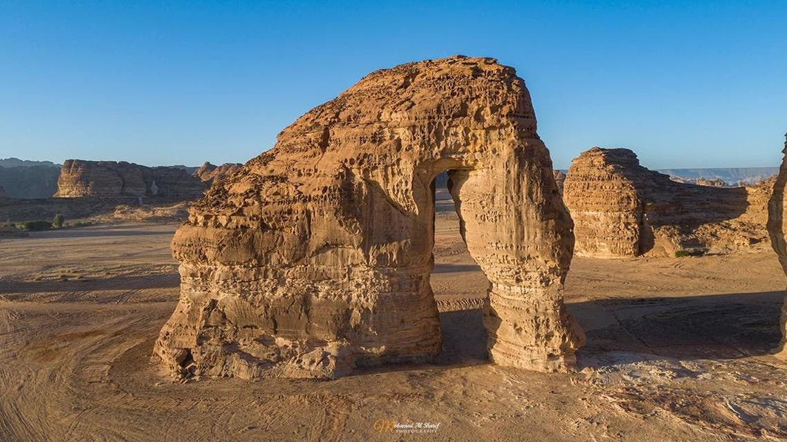
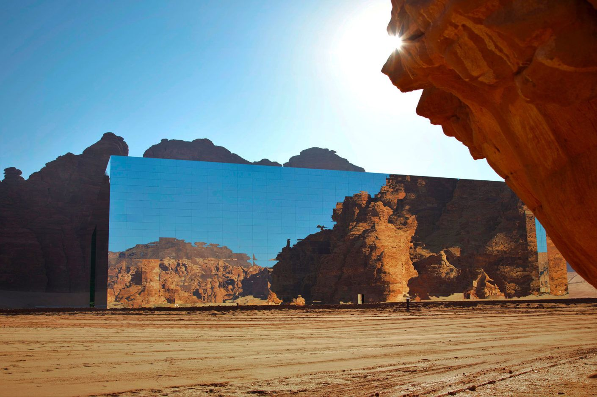
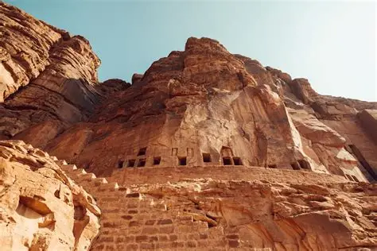
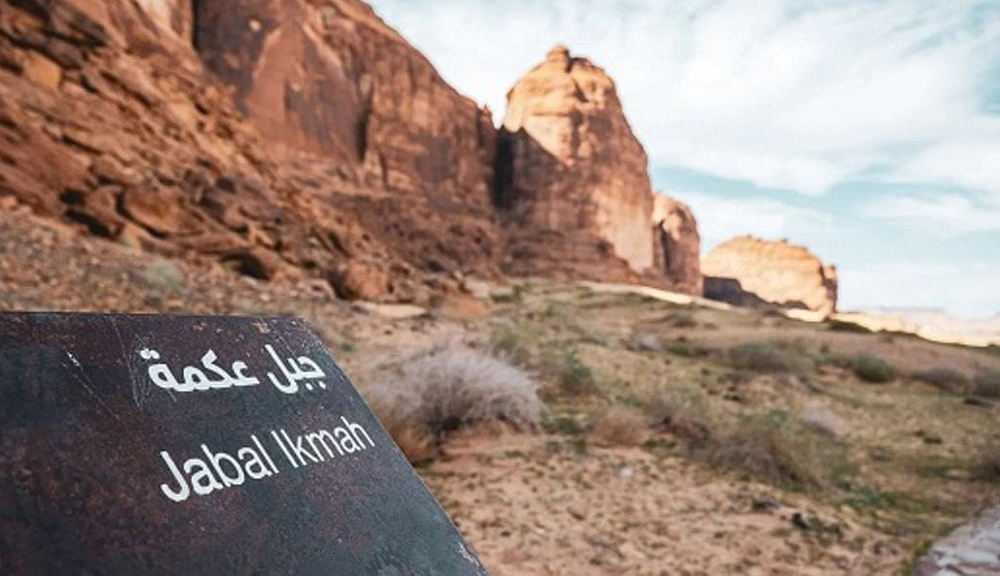

تضم العلا مجموعة متنوعة من المعالم السياحية التي تجمع بين التاريخ العريق والطبيعة الخلابة والحداثة المتميزة. من المواقع الأثرية التي تعود لآلاف السنين إلى التكوينات الصخرية الفريدة والمنشآت الحديثة التي تتناغم مع البيئة المحيطة.

أول موقع سعودي يدرج في قائمة اليونسكو للتراث العالمي، يضم أكثر من 100 مقبرة نبطية منحوتة في الصخور تعود للقرن الأول قبل الميلاد. تتميز بواجهاتها المعمارية الفريدة التي تعكس براعة الأنباط في النحت والعمارة.
اكتشف المزيد
تقع في قلب العلا وتضم أكثر من 900 منزل طيني وحجري، و400 متجر، و5 ساحات عامة. كانت مأهولة حتى ثمانينيات القرن الماضي، وتقدم لمحة عن الحياة التقليدية في المنطقة مع أزقتها الضيقة ومسجدها التاريخي.
اكتشف المزيد
تكوين صخري طبيعي يشبه فيلاً ضخماً يبلغ ارتفاعه 52 متراً، تشكل عبر ملايين السنين بفعل عوامل التعرية. تحيط بها كثبان رملية ذهبية وتضاء ليلاً بمشاهد ضوئية ساحرة، مما يجعلها مكاناً مثالياً للتصوير والاسترخاء.
اكتشف المزيد
أكبر مبنى مغطى بالمرايا في العالم، صممته شركة "فلويد" الإيطالية. يضم قاعة للحفلات الموسيقية تتسع لـ 500 شخص، ويمثل تحفة معمارية تتناغم مع البيئة المحيطة حيث تعكس مراياه المناظر الطبيعية الخلابة.
اكتشف المزيد
عاصمة مملكتي دادان ولحيان التي ازدهرت بين القرنين الثامن والسادس قبل الميلاد. يضم الموقع بقايا قصور ومعابد ومقابر ملكية منحوتة في الجبال، بالإضافة إلى نقوش وكتابات تعكس تاريخ المنطقة الغني.
اكتشف المزيد
يُعرف بمكتبة العلا المفتوحة، حيث يحتوي على أكثر من 450 نقشاً ورسوماً تعود لحضارات دادان ولحيان والأنباط. تمثل هذه النقوش سجلاً تاريخياً هاماً للحياة الدينية والاقتصادية والاجتماعية في المنطقة عبر العصور.
اكتشف المزيد